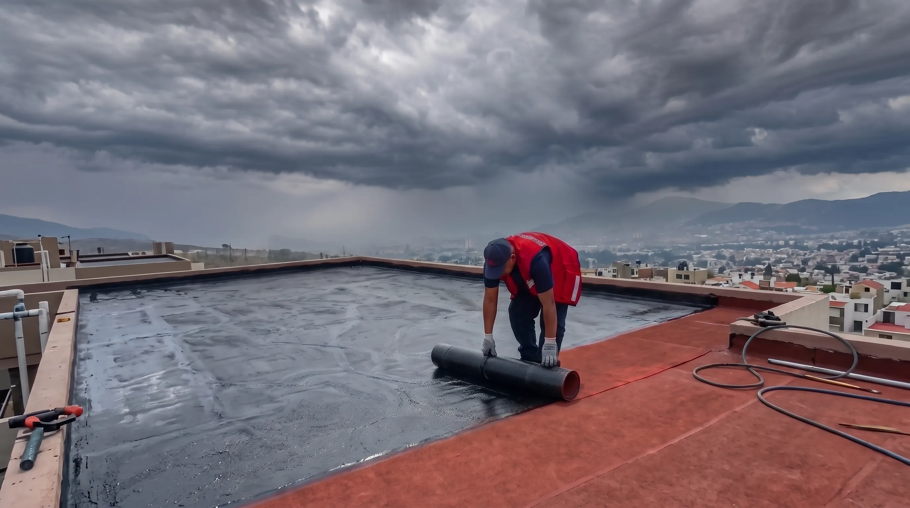

Impermeabilización Profesional en CDMX y Estado de México
Agendar VisitaNuestra Experiencia Técnica
En Mantonet, somos expertos en impermeabilización dedicados a proteger tu propiedad de filtraciones, humedad y daños estructurales. Operamos con los más altos estándares para techos y terrazas en casas, residencias, departamentos y corporativos.
Nuestra capacidad técnica está respaldada por especialistas con más de 30 años de experiencia en el sector de la construcción y mantenimiento. Hemos protegido con éxito más de 100 inmuebles, ofreciendo una garantía de hasta 10 años.
Para garantizar la excelencia, no trabajamos con suposiciones: evaluamos cada caso mediante un diagnóstico profesional, ejecutamos rigurosas pruebas de agua y documentamos todo el proceso entregando una bitácora y reporte fotográfico detallado al cliente. Tu inversión cuenta con total transparencia técnica.
Nuestra Cobertura
Contamos con la logística y el equipo técnico necesario para brindar atención oportuna en una amplia variedad de zonas. Realizamos proyectos de impermeabilización tanto a nivel residencial como comercial en:
- Estado de México: Tlalnepantla de Baz, Naucalpan de Juárez, Atizapán de Zaragoza y municipios aledaños.
- Fraccionamientos y zonas residenciales: Atendemos proyectos en Condado de Sayavedra, Club de Golf Bellavista, Las Arboledas, Ciudad Satélite, Lomas Verdes y Zona Esmeralda.
- Ciudad de México: Brindamos servicio constante en Polanco, Lomas de Chapultepec, el Centro Histórico y diversas alcaldías de la ciudad.
Cualquiera que sea la ubicación o el tamaño del proyecto, aplicamos el mismo rigor técnico y profesionalismo.
Servicios Profesionales de Impermeabilización
- Inspección y diagnóstico profesional de humedad y filtraciones
- Impermeabilización de todo tipo de techos (planos, inclinados e industriales)
- Impermeabilización de depósitos de agua (cisternas, albercas, aljibes y fuentes)
- Protección para muros, fachadas, sótanos y cimentaciones
- Sellado profesional de grietas, fisuras y juntas constructivas
- Aplicación de sistemas especializados (membranas, acrílicos, poliuretano)
- Recubrimientos reflectivos para ahorro de energía y protección anticorrosiva
- Mantenimiento preventivo y correctivo de sistemas de impermeabilización
¿Por qué elegir Mantonet?
Dirección Técnica Experta
Más de 30 años de experiencia real en construcción y mantenimiento estructural nos respaldan.
Reporte Fotográfico
Transparencia total. Te documentamos el antes, los vicios ocultos y el resultado final.
Garantías de 5 a 12 Años
Te ofrecemos total tranquilidad con sistemas de alta durabilidad disponibles en pólizas de 5, 8, 10 y 12 años libres de mantenimiento, adaptadas rigurosamente a las necesidades de tu inmueble.
Pruebas de Agua
No entregamos hasta no confirmar la efectividad absoluta de nuestro trabajo mediante pruebas de inundación.
Nuestro Procedimiento de Impermeabilización
Conoce paso a paso la metodología técnica con la que garantizamos un sellado hermético y duradero en tu propiedad.
Visita de Diagnóstico
Inspeccionamos físicamente tu propiedad para localizar el origen exacto de las filtraciones, medir desniveles y evaluar las condiciones estructurales de la losa o muro antes de cualquier intervención.
Cotización y Propuesta
Te entregamos un plan de acción detallado con la solución técnica más adecuada. Especificamos el tipo de manto a utilizar, los tiempos de ejecución y los costos exactos, sin cargos ocultos.
Preparación de Superficie
La durabilidad del trabajo reside en la preparación. Retiramos restos de impermeabilizantes viejos, suciedad y escombros para asegurar que el nuevo sistema tenga una base de adherencia perfecta.
Aplicación de Primer
Sellamos la porosidad del concreto aplicando un primario asfáltico de alta penetración. Esto crea el puente de anclaje óptimo entre la estructura de la losa y el sistema impermeable.
Sellado y Calafateo
Rellenamos y sellamos meticulosamente fisuras, chaflanes y puntos críticos (como bases de tinacos, domos o tuberías) utilizando cemento plástico de alta resistencia para bloquear filtraciones.
Manto Prefabricado
Instalamos el manto prefabricado mediante termofusión a base de fuego. El enfoque principal se centra en el vulcanizado y sellado hermético de todos los traslapes de juntas constructivas.
Protección Acrílica
Para finalizar, aplicamos una capa de pintura reflectiva o acabado acrílico. Esto protege el manto de los rayos UV, prolonga su vida útil y ayuda a mitigar el calor en el interior.
Preguntas Frecuentes sobre Impermeabilización
¿Por qué es importante impermeabilizar?
La impermeabilización es fundamental para la salud de tu propiedad. Principalmente, te ayuda a:
- Proteger tu hogar: Evita la aparición de humedad, filtraciones y el crecimiento de moho perjudicial para la salud.
- Prolongar la vida útil de la estructura: Previene el deterioro causado por el agua en cimientos, muros y techos.
- Evitar costosas reparaciones: Actuar preventivamente es mucho más económico que reparar daños estructurales a futuro.
¿Qué es la impermeabilización y por qué es crucial?
Impermeabilización: ¿Qué Es? y ¿Por Qué Es Vital para Tu Propiedad?
La impermeabilización es un proceso que consiste en aplicar una capa o barrera protectora sobre una superficie para evitar que el agua o la humedad penetren en ella. Imagina tu casa como una fortaleza: la impermeabilización es el escudo que la protege de la lluvia, la humedad del suelo y cualquier tipo de filtración.
Es crucial porque, sin ella, el agua puede causar daños severos. Algunos de los riesgos son:
- Aparición de moho y hongos, que afectan la calidad del aire y la salud.
- Filtraciones visibles en techos y paredes que dañan los acabados.
- Deterioro de los cimientos y elementos estructurales.
En resumen, al impermeabilizar obtienes beneficios directos:
- Proteges tu inversión inmobiliaria a largo plazo.
- Mejoras la calidad del aire interior al prevenir el moho.
- Aumentas la eficiencia energética, ya que una estructura seca es más fácil de climatizar.
- Prolongas la vida útil de toda la edificación.
¿Cuáles son los problemas más comunes que indican la
necesidad de impermeabilizar?
Señales de Alerta: 7 Problemas Comunes que Indican la Necesidad de Impermeabilizar
Tu casa te da señales claras cuando necesita ser impermeabilizada. Presta atención a estos problemas comunes:
- Manchas de humedad o moho en paredes y techos.
- Goteras visibles durante o después de llover.
- Formación de moho o verdín en áreas húmedas.
- Encharcamientos en patios, terrazas o sótanos.
- Aparición de grietas o fisuras en la superficie.
- Deterioro visible del impermeabilizante anterior (burbujas, desprendimiento).
- Hinchamiento de placas de yeso o desprendimiento de baldosas.
- Presencia constante de malos olores a humedad.
¿Por qué falla la impermeabilización o aparecen filtraciones?
Evita Errores: Las 5 Razones Principales por las que Falla la Impermeabilización
Una impermeabilización puede fallar por varias razones, la mayoría evitables. Las 5 causas principales son:
- Preparación inadecuada: No limpiar a fondo la superficie para eliminar polvo, grasa o material suelto.
- Elección incorrecta del material: Usar un producto no apto para el tipo de superficie, clima o uso.
- Aplicación incorrecta: No seguir las instrucciones del fabricante, o aplicar capas demasiado delgadas.
- No reparar daños previos: Impermeabilizar sobre grietas o fisuras sin tratarlas primero.
- Falta de mantenimiento: No realizar inspecciones y limpiezas periódicas para prolongar su vida útil.
¿Cuándo es el mejor momento para impermeabilizar?
¿Cuándo Impermeabilizar? El Momento Ideal y Soluciones para Urgencias
El mejor momento para impermeabilizar es durante las estaciones secas, como la primavera o el verano, cuando la superficie está completamente seca.
Condiciones a evitar:
- Pronóstico de lluvia: Evita aplicar si se espera lluvia 72 horas antes o después.
- Temperaturas extremas: No se recomienda aplicar por debajo de 10°C o por encima de 42°C.
Para casos de urgencia en techos ya húmedos, existen sistemas especializados que permiten la aplicación después de eliminar el exceso de agua.
¿Qué áreas de mi propiedad requieren impermeabilización?
Más Allá del Techo: Áreas Clave de Tu Propiedad que Necesitan Impermeabilización
Aunque los techos son la primera área que consideramos, otras zonas críticas de tu propiedad también requieren atención:
- Cimientos y sótanos: Para evitar la humedad que sube del suelo (capilaridad).
- Terrazas y balcones: Especialmente si tienen baldosas con juntas que se deterioran.
- Paredes exteriores: Sobre todo las que están más expuestas a la lluvia y al viento.
- Jardineras: El contacto constante con tierra húmeda puede dañar los muros.
- Juntas de ventanas y puertas: Son puntos débiles por donde el agua puede filtrarse fácilmente.
¿Cuáles son los tipos de impermeabilizantes más comunes y sus
usos?
Guía de Impermeabilizantes: Elige el Tipo Correcto para Cada Superficie
Existen varios tipos de impermeabilizantes, cada uno diseñado para una necesidad específica. Los más comunes son:
- Acrílicos: Líquidos y elásticos, ideales para techos y azoteas.
- Asfálticos: Muy resistentes a la humedad del suelo, usados en cimientos y jardineras.
- Cementosos: Perfectos para tanques, cisternas y muros con problemas de salitre.
- Membranas de Poliuretano: Flexibles y resistentes al tráfico peatonal, para terrazas y balcones.
- Membranas Bituminosas: Láminas asfálticas prefabricadas de alta durabilidad para grandes superficies.
- Elastoméricos: Soportan muy bien los cambios de temperatura y movimientos estructurales.
- Hidrófugos: Repelen el agua en superficies porosas como ladrillo o cantera, sin cambiar su apariencia.
La elección correcta depende de la superficie, el clima y la durabilidad que esperas.
¿Cómo elegir el impermeabilizante adecuado para mi necesidad?
No Existe el Mejor: Cómo Elegir el Impermeabilizante Ideal para Tu Proyecto
No hay un impermeabilizante "mejor", sino el adecuado para tu necesidad específica. Para elegirlo, debes considerar estos factores clave:
- Tipo de superficie: ¿Es concreto, metal, madera o lámina?
- Tipo de exposición: ¿Recibirá lluvia directa, humedad del subsuelo o tráfico peatonal?
- Condiciones climáticas: ¿Tu región tiene temperaturas extremas o mucho movimiento estructural?
- Durabilidad esperada: ¿Buscas una solución de 5, 10 o más de 20 años?
- Presupuesto: Define cuánto estás dispuesto a invertir en la protección de tu propiedad.
¿Cómo se prepara la superficie antes de aplicar el impermeabilizante?
Preparación Perfecta: Pasos Clave Antes de Impermeabilizar para Evitar Fallos
La preparación de la superficie es el 50% del éxito de una buena impermeabilización. Los pasos esenciales son:
- Limpieza profunda: Eliminar polvo, grasa, moho, impermeabilizantes viejos y cualquier material suelto.
- Reparación de daños: Sellar y reparar cualquier grieta o fisura existente para asegurar una base uniforme.
- Secado completo: Asegurarse de que la superficie esté completamente seca antes de aplicar cualquier producto.
- Aplicación de imprimación: Usar un "primer" o sellador para mejorar la adherencia del impermeabilizante a la superficie.
Respetar los tiempos de secado entre cada paso es crucial para un resultado profesional.
¿Cuál es el procedimiento correcto para aplicar el impermeabilizante?
Aplicación Experta: Guía Paso a Paso para una Impermeabilización Duradera
Aunque siempre debes seguir las instrucciones del fabricante, el procedimiento general es el siguiente:
- Preparación de la superficie: Limpiar, reparar y secar el área como se mencionó en la pregunta anterior.
- Aplicación de imprimación: Aplicar el sellador o "primer" para garantizar la adherencia.
- Primera capa de impermeabilizante: Aplicar una capa uniforme del producto.
- Colocación de malla de refuerzo: En puntos críticos como grietas, juntas o desagües, se coloca una malla de refuerzo sobre la primera capa fresca.
- Capas adicionales: Aplicar las capas subsecuentes en sentido cruzado a la anterior, respetando siempre los tiempos de secado.
- Atención a los detalles: Asegurarse de cubrir bien esquinas, bordes y zonas de difícil acceso.
¿Cómo se trata la humedad por capilaridad en
paredes y cimientos?
Combate la Humedad por Capilaridad: Soluciones Efectivas para Cimientos y Paredes
La humedad por capilaridad ocurre cuando el agua del suelo asciende por los poros de los materiales. Se reconoce por manchas de humedad en la parte baja de las paredes y la formación de salitre.
Para combatirla, existen varias soluciones efectivas:
- Barreras impermeables: Aplicar productos específicos en la base de los muros.
- Impermeabilización exterior: Excavar y tratar los muros enterrados desde fuera.
- Inyección de productos hidrófugos: Se inyectan resinas en el muro para crear una barrera interna.
- Drenaje adecuado: Asegurar que el terreno tenga una pendiente que desvíe el agua lejos de la casa.
¿Cómo eliminar la humedad por condensación y prevenir el moho?
Adiós al Moho: Estrategias para Eliminar la Humedad por Condensación en Casa
La humedad por condensación se genera cuando el vapor de agua del aire se enfría al tocar superficies frías, causando moho negro o verdín, especialmente en esquinas y armarios.
La clave es controlar la humedad ambiental con estas estrategias:
- Mejorar la ventilación: Abrir ventanas diariamente y usar extractores en baños y cocinas.
- Mantener una temperatura constante: Evitar cambios bruscos de temperatura en el interior.
- Utilizar deshumidificadores: En áreas particularmente húmedas como sótanos.
- Aplicar aislamiento térmico: Aislar las paredes y techos fríos para que no condensen la humedad.
El moho existente debe limpiarse con productos fungicidas específicos antes de cualquier otra solución.
¿Cuánto tiempo dura una impermeabilización y cómo puedo
prolongar su vida útil?
Maximiza la Vida Útil: Mantenimiento Clave para una Impermeabilización Duradera
La duración varía mucho según el producto y la aplicación, pudiendo ir de 5 a más de 20 años. Para prolongar al máximo su vida útil, el mantenimiento periódico es el factor más importante.
Las acciones clave de mantenimiento incluyen:
- Inspecciones regulares: Revisar la superficie al menos una vez al año, especialmente después de lluvias fuertes.
- Limpieza de la superficie: Retirar hojas, basura y cualquier objeto que pueda estancar el agua o dañar la capa protectora.
- Reparaciones preventivas: Arreglar cualquier pequeño daño (burbuja, fisura) tan pronto como se detecte.
- Evitar el uso indebido: No colocar objetos pesados o puntiagudos que puedan perforar o dañar el sistema.
Atención Especializada por Zona
Selecciona tu zona para conocer nuestras soluciones específicas para tu tipo de inmueble: